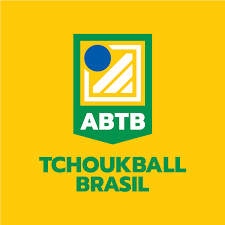

Sabemos que hoje nossa seleção tem uma participação nesse pequeno mundo do tchoukball também conhecida como ABTB (Associação Brasileira De Tchoukball) conta com um titulo ganho ano passado(2022)que também lhe deu a opção de participar do mundial de Tchoukball
